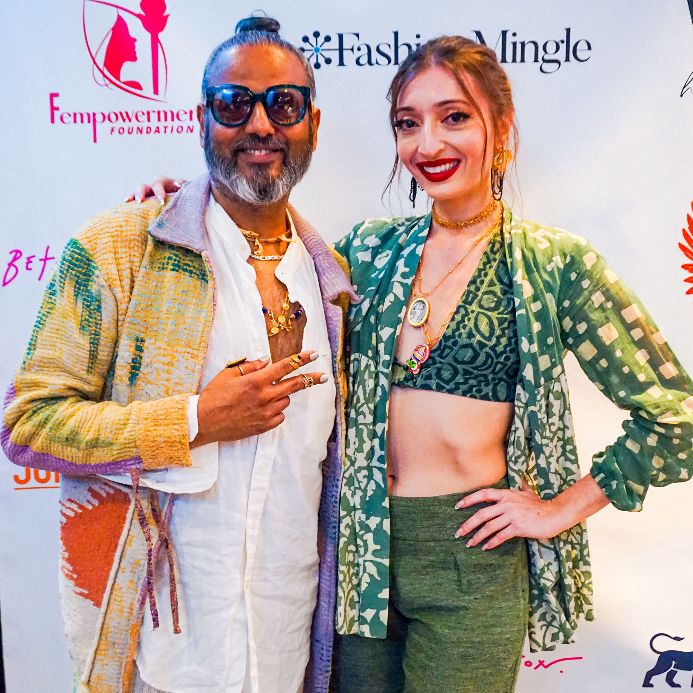
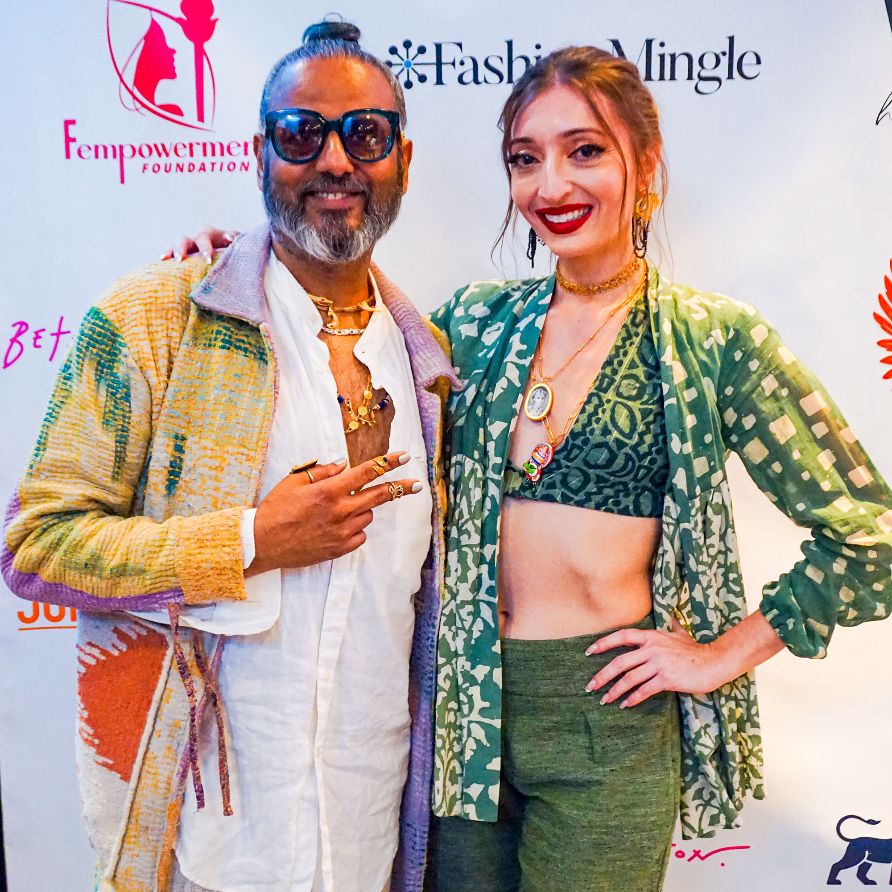

A Backstage Photography Experience at a Fashion Show with Rito
Here Rito will depict the story of a fashion event he was a backstage photographer for during a New York Fashion Week.
Being backstage as an observer can be a very special experience, you get a view of the birds-eye depths of the most human moments behind the curtains... so it would do no justice to simply share a gallery of photos or a montage.
Instead...
You will see a story unfold told in photos, text and animated navigation.
A Who's-Who Event Overview
The event was sponsored in part by JUMPTAG Club, a Fashion Tech company founded by Rito, in partnership with Ritography for photos taken.

Sandy Dalal
Carmen Artigas
A Creative Director & Fashion Consultant
A Fashion Sustainability Designer & Advocate
Speaker Panelists
Rachel Cooper
Melissa Shea
Director of Asia Society
CEO of Fashion Mingle
Event Hosted by
Ajay Shrivastav
Featured Designer

Poonam Thimmaiah
Featured Jewelry Designer
With contributions to the show from many other brands including:
Sections of Event


Featured Designers
Ajay Shrivastav

With over 20 years of experience in entrepreneurship across the fashion, media, jewelry, and nonprofit sectors, Ajay has successfully scaled various ventures. Among them he founded GingerBlu, a sustainable women’s fashion brand, and co-founded of NectarNectar, a globally recognized jewelry brand, both dedicated to ethical practices and female empowerment.
Shop with select merchants and get even more Daily Cash.


Poonam Thimmaiah
With a rich background in finance, engineering and a passion to create, Poonam founded her jewelry brand, Maalicious, based in New York City. Maalicious offers unique, gender-fluid jewelry crafted by women artisans in India emphasizing empowerment and sustainability.
Shop with select merchants and get even more Daily Cash.


Backstage Prep
Get 2% Daily Cash back
Shop with select merchants and get even more Daily Cash.
*WARNING*

🚨 Artists at Work 🚨


Swipe the below images for a sneak preview!


Almost showtime


The featured designer is almost stage ready
And he's got a jumptag ready for action!
Presentations
At the mainstage area, the audience gathered to hear several speakers give speeches at the podium.
Rachel Cooper, Director of Performing Arts at Asia Society, addresses the crowd and sets the stage for the topics to come.
A representative from a government office in NYC came by to commemorate Asia Society for its contributions.
Carmen Artigas then takes the stage to deliver a keynote on climate-based sustainability issues and its history
...setting up topics for the speaker panel discussion, they're already seated on stage
Speaker Panel Discussion
After her presentation, Carmen Artigas joins the speaker panel discussion including featured designer Ajay Shrivastay, Sandy Dalal (a creative director and designer) and Rachel Cooper as moderator.

Some questions from the audience thrown in for good measure
Fashion Show
To get the fashion show underway, Ajay first introduces the featured jewelry designer to the stage
Poonam Thimmaiah introduces herself and her jewelry brand Maalicious
But Ajay has a message...
I think it's time for a fashion show!


Press down onto the image to see the shoes in action!
Swipe image to be dazzled by the dress


Thank you ladies & gentleman,
that is a wrap!
Afterparty

Photos with the people responsible for running the show


The Speakers
The Models


Photos with the designers


 

Miscellaneous!